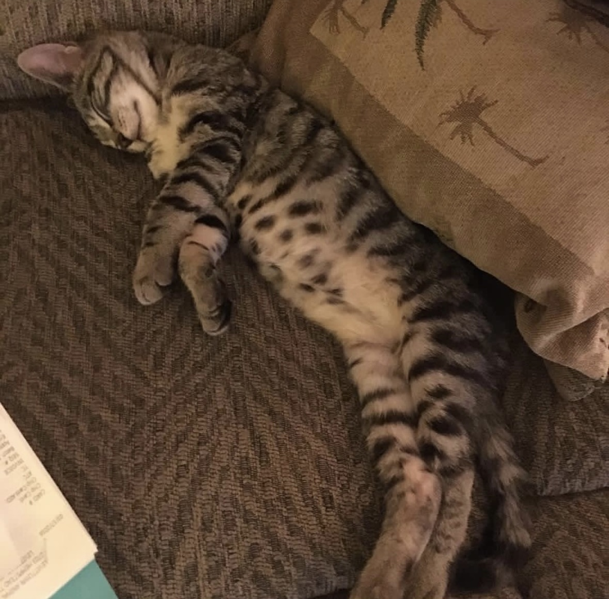
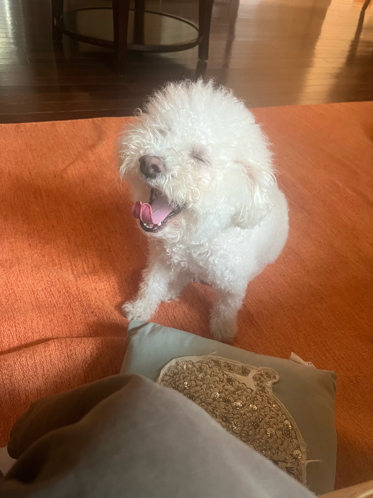
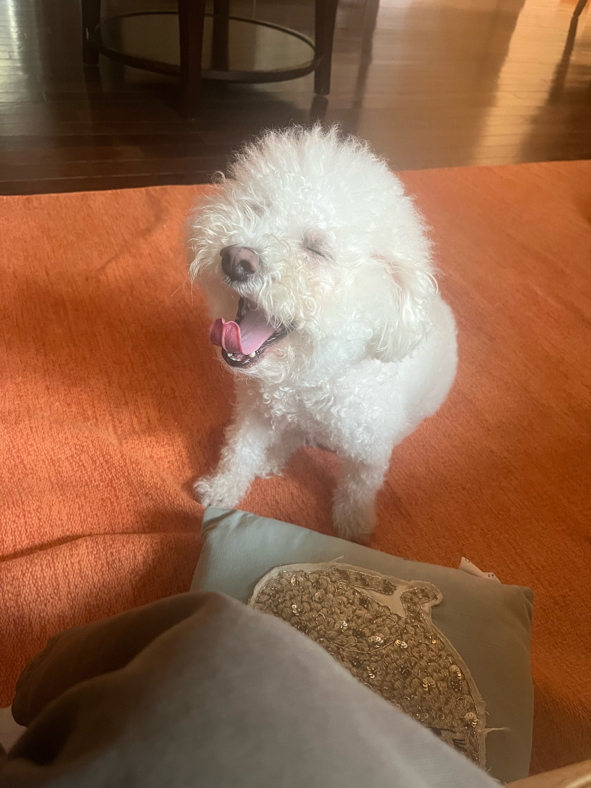
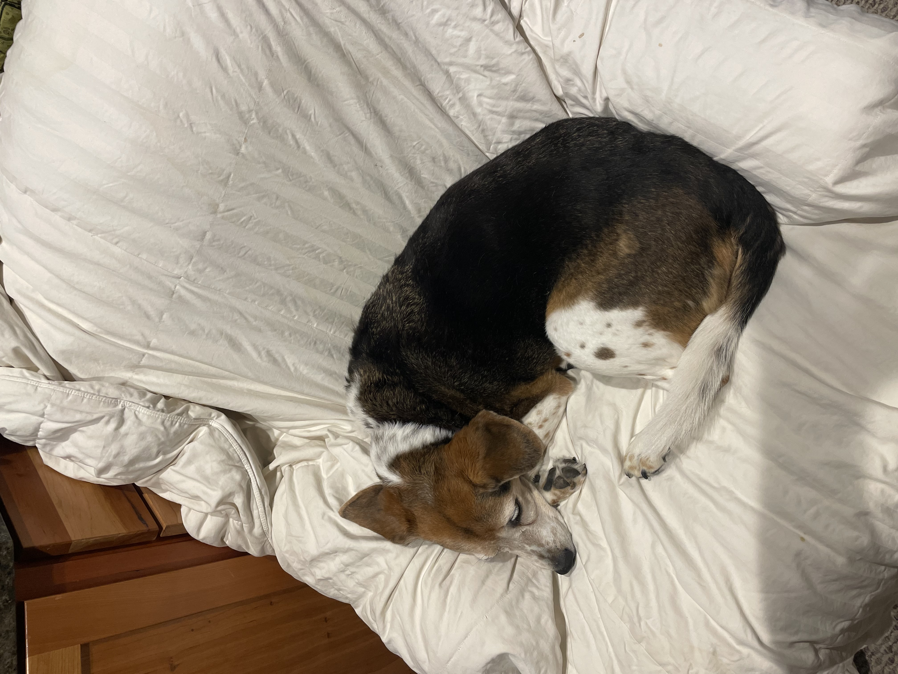
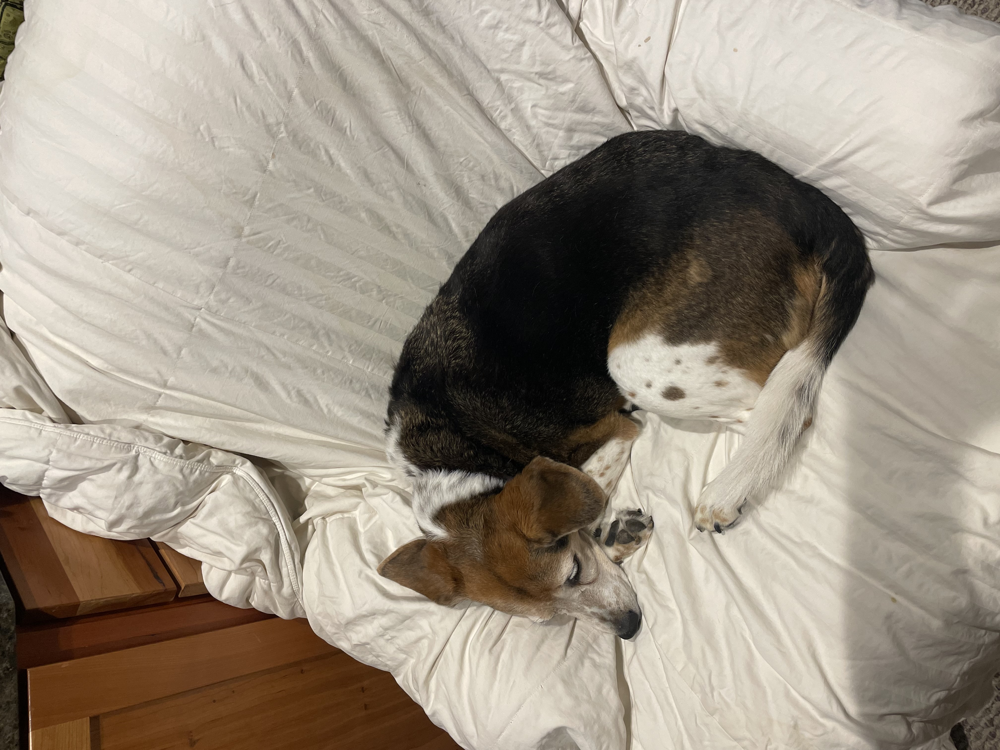

Finn

Finn is a 7 year old grey cat. I feel like no one really knows cat breeds so I’m just gonna go with grey. He loves doing tricks for treats and his favorite is giving high fives to people. He might as well be a dog as he loves the outdoors and meeting new people. I can only describe him as goofy and chaotic.
Finn’s biggest enemy is his vet. I don't know whether or not it’s because his vet is an MSU alum, but he doesn’t like him. He actually has to be prescribed a sedative before he goes to the vet office because he’ll suddenly act like he was never a house cat for 7 years.
Photo Gallery


Likes
- Belly rubs
- Head Rubs
- Sleeping in cardboard boxes
Bear!

Bear is a lazy, food-loving dog that is sometimes playful. His favorite activity is lying in the sun on his side and lounging. He enjoys playing with his toys and loves to fetch them when you throw them, but eventually, he gets bored and just stops fetching them and lays down.
Bear is also scared of a lot of things. He does not like water (showers and even rain) or getting his nails clipped, and he is sometimes even so lazy that he will just stop walking and sit down until you turn around and go back home.
Photo Gallery


Likes
- Food
- Laying in Bed
- Fetch
Luna

Luna is a German shepherd mix and a fireball of energy. Oftentimes, destroying anything in her path she will take and hide all your socks, shoes, and clothes for her to chew on. She loves playing catch at the park, it always gives her the zoomies.
Luna is a very jealous, loving, and protective dog. She really embraces her inner chihuahua and will bark at any stranger, car, or noise at night. She makes the perfect guard dog. But she is not at all aggressive. Luna is all bark no bite!
Photo Gallery


Likes
- Chicken
- The park
- Belly rubs
Daisy

When Daisy isn’t busy slaying all of the evil snakes trying to attack us (Pictured Above), you can usually find her annoying her older sister Marina, getting super hyper at completely random times, or relaxing in our backyard making sure she keeps out all of the intruders (squirrels)
One of Daisy’s favorite things to do is beg to go on a walk, and then once we’re about half way done with the walk she likes to lay down and refuse to keep going. She then loves being carried all the way back from said walk, and the process will repeat again later in the day.
Photo Gallery


Likes
- Shredded Cheese
- Walks around the neighborhood
- Peanut Butter Chex Cereal (specifically peanut butter kind)
River

River is a 7 year old bichon frise. Though he is aging, he is extremely active and loves to play. He likes to throw things. He will throw his ball down the stairs and play fetch with himself if you don’t give him attention. He will also throw his food and water bowl to let us know he wants more.
River is obsessed with my mom. My mom is the one who mostly walks him and gives him treats. Anywhere my mom goes, River follows. If she's gone for 2 minutes, he will frantically search the house for her. Although he likes being with people, he hates being cuddled or held.
Photo Gallery
 


Likes
- Attention
- Treats
- Rolling ball down the stairs
Sofie

Sofie is a 15-year-old Beagle mix. Her favorite spot in the house is the living room couch. She loves to go outside, sometimes too much, leaving us to open the door for her constantly. Sofie loves freshly cut grass, she rolls around in it for hours after it gets cut.
Sofie is very old, she joined our family when I was still in a car seat. Sofie loves the weekends because she gets her favorite treat, a fried egg. Sofie loves long walks around the lake or on the trail, where she can be let free to run to her hearts content.
Photo Gallery
 



Likes
- Fried eggs
- Peanut butter
- bacon strips
Biscuit

Biscuit is a 2 year old shiba inu dog. Shiba inus are energetic and playful dogs. Biscuit enjoys running outside in circles and then laying down in the grass in the sun for hours. He also likes going for occasional swims.
As energetic as Biscuit is, he also likes to relax. He loves to sleep in his dog bed and watch Netflix with his owners. His favorite treat is apples.
Photo Gallery


Likes
- Going for walks
- Swimming
- Apples